W12 <<
Previous Next >> W14
online
零件檔
主臂關節1
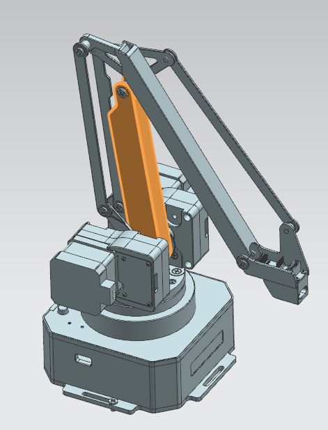
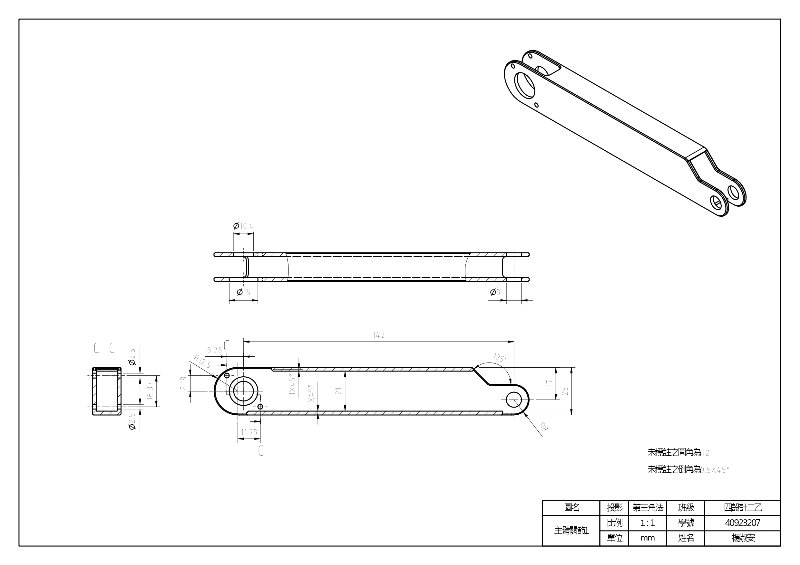
主臂關節2
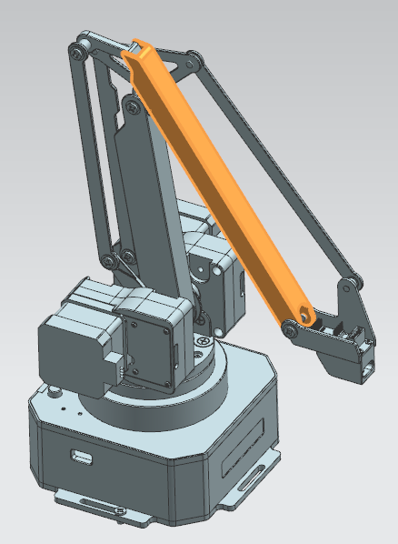
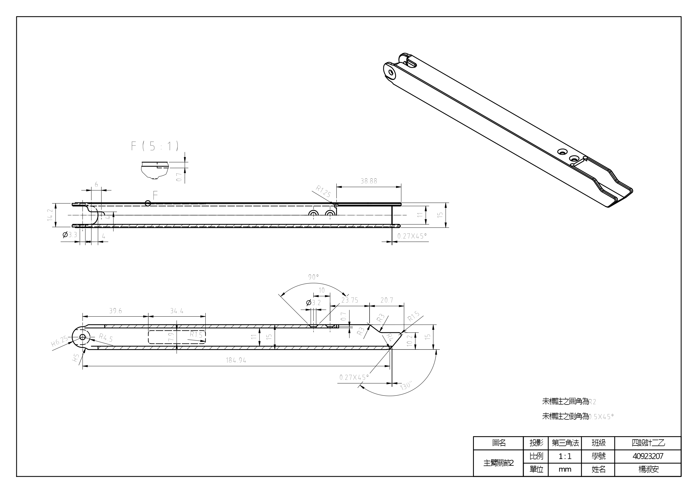
右側曲柄
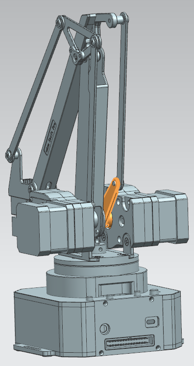
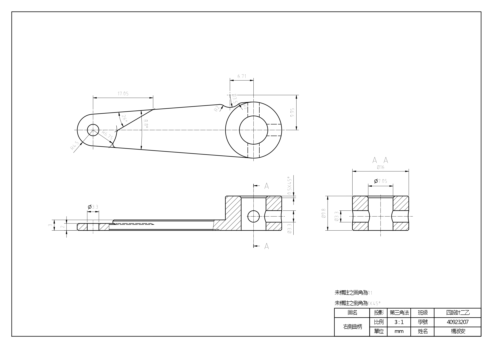
絞鍊
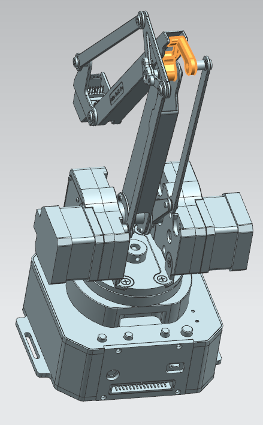
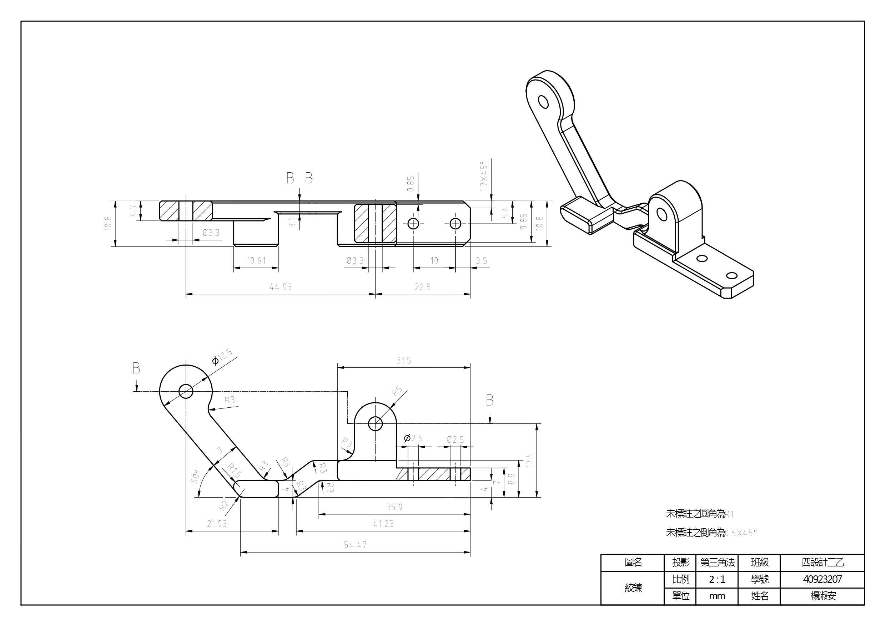
電機軸承支撐座(右側)
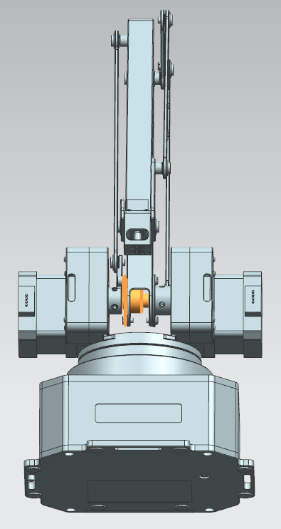
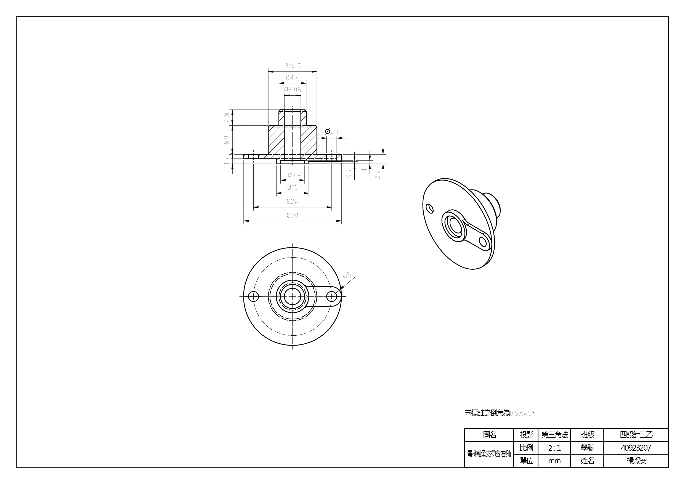
電機軸承支撐座(左側)
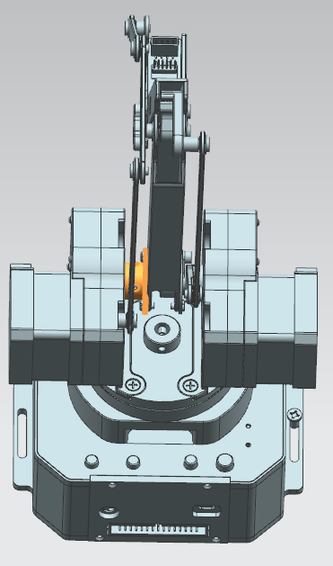
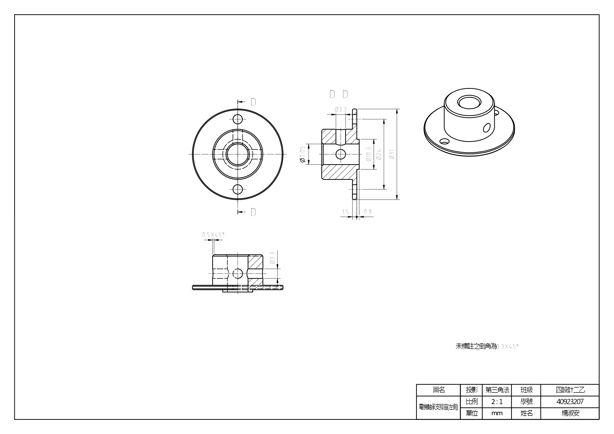
2.uarm 組合圖
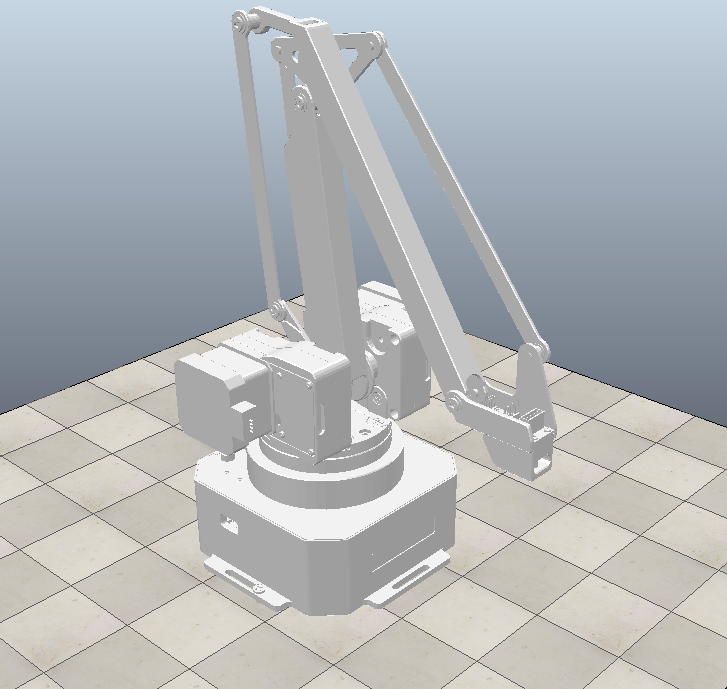
--------------------
STL 格式轉入 CoppeliaSim
--------------------
GUI slider 控制前三軸作動(第三軸修繕中)
--------------------
流程與心得簡報
零組件繪製過程與 CoppeliaSim 操控流程及心得:
零組件繪製過程
使用NX12進行零件繪製及工程圖繪製
CoppeliaSim 操控流程
1.將繪製好並組合好的檔案轉成STL檔
2.開啟Coppeliasim匯入剛轉好的STL檔
3.將模型移到適當位置
4.分解模型
5.將多餘的零件關閉所有圖層的顯示(螺釘、螺帽...)
6.把所有模型簡化
7.加上程式碼
8.裝上馬達並將馬達取對應程式碼的名字
9.開始連接模型以及馬達
10.模擬作動
心得:
經過這次W8的作業後
1.我了解到Coppeliasim各版本的差異，像是語法的不同、功能的不同、舊版不能開新版檔案等差異
2.Coppeliasim的檔名不要使用中文、檔案放置位置的資料夾也盡量都使用英文，不然在模擬時容易出現找不到檔案的問題
W12 <<
Previous Next >> W14